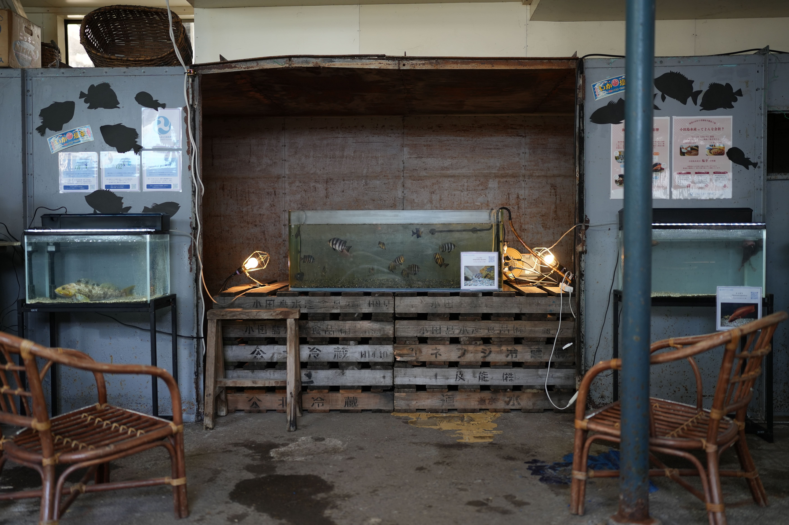
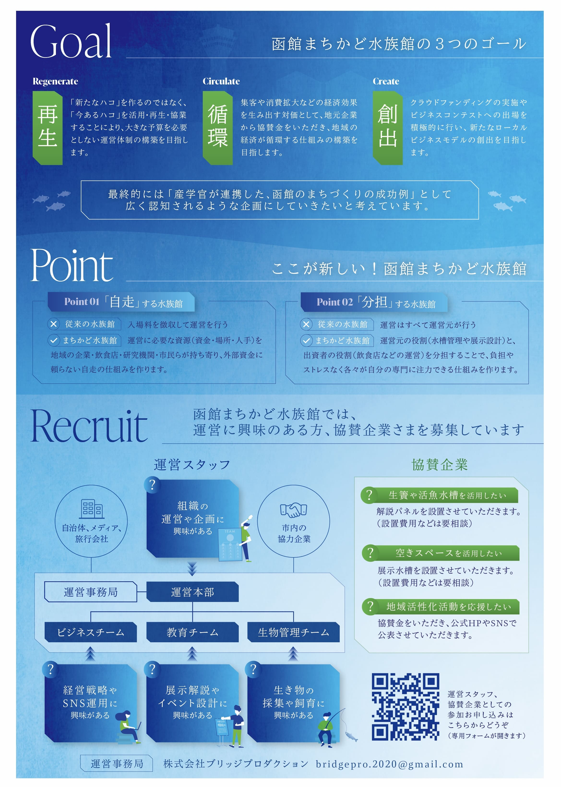
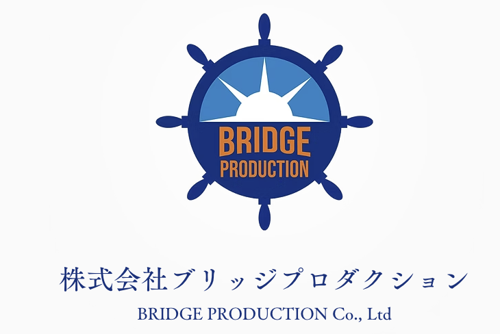
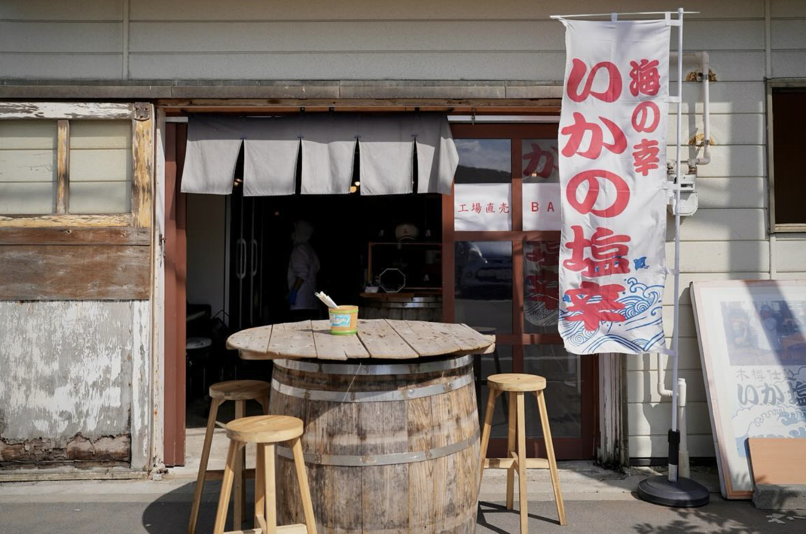
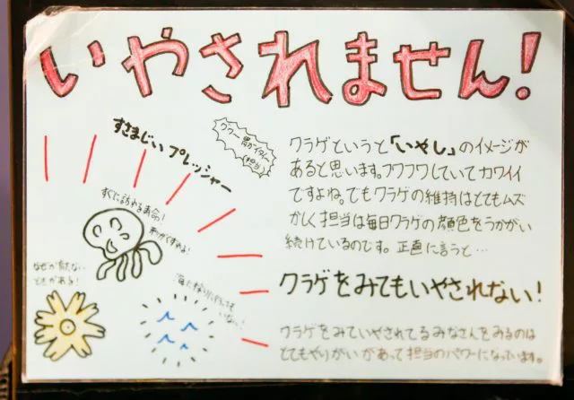
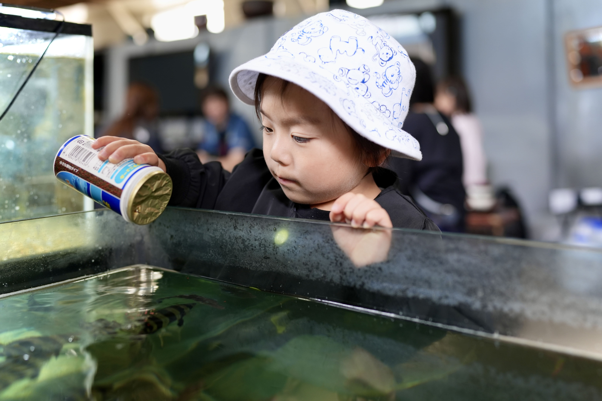
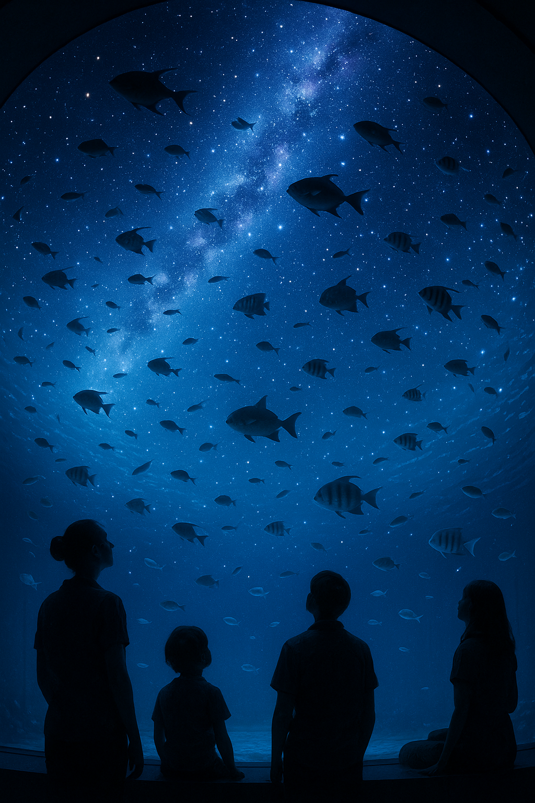
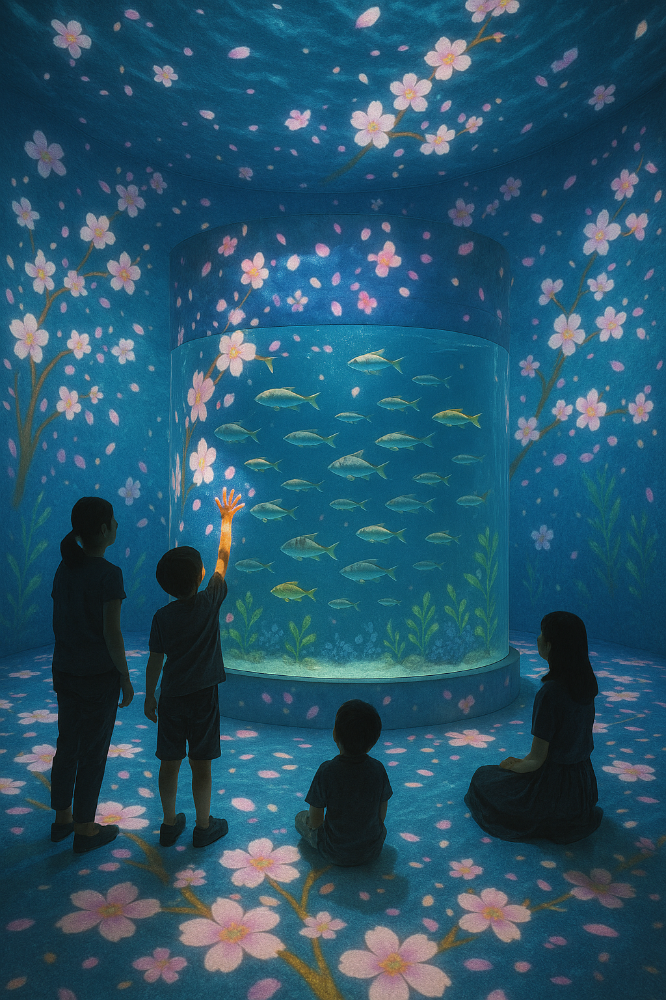

函館の海をより身近に、より楽しく

函館は「水産と観光の街」として多くの人々に親しまれています。しかしながら、大規模な水族館が不在である現状に対し、私たちは新たな可能性を追求しています。過去には約78億5,000万円という建設費用が課題となり、その実現には至りませんでした。
この課題を乗り越えるため、私たち「まちかど水族館」プロジェクトは、という新しい視点のもと分散型水族館の構想を推進しています。この新しい形の水族館を通して、子どもから大人まで、誰もが気軽に函館の豊かな海洋生物や地域の水産業に触れ、海を身近に感じ、学び、楽しむ機会を創出することを目指しています。プロジェクトは2024年に開始され、現在8名の水族館が大好きなメンバーで活動しています。
「まちかど水族館」に込められた想い

函館市は長年にわたり水産業を基幹産業として発展してきましたが、市民が海や魚、漁業、水産業に直接触れる機会は意外にも限られています。楽しく魚と触れ合える機会は限られているにも関わらず、テレビ等を通じて受動的に入ってくる情報は、資源量の減少や原材料の高騰といった経済的な側面が多く、水産業に対するポジティブなイメージが醸成されているとは言えません。
私たちは、このような現状に対し、自ら能動的に「遊び」「学び」の機会を得られる場所があれば、水産業や海洋教育について、その魅力や可能性がより広く伝わると確信しています。「まちかど水族館」は、単に魚を展示するだけでなく、函館の街の遊休スペースを活用することで、誰もが気軽に海の生物や水産業に触れ、興味を持つきっかけを創出します。
この取り組みを通じて、私たちは水産業や海の豊かさの魅力を再発見し、その未来を担う子どもたちが、体験を通してポジティブな視点と深い関心を持てるような機会を提供したいと考えています。同時に、まちに活気と賑わいを生み出し、地域の経済が循環する仕組みを構築することで、持続可能な地域社会の発展にも貢献していくことを目指しています。
withの方々について
🤝共同パートナー

株式会社Bridge Production
株式会社Bridge Productionは、「まちかど水族館」プロジェクトの発起人であり、その推進を担う共同パートナーです。代表の菊地氏は、この革新的な構想を立ち上げ、小田島水産様、菅原組様といった地域の皆様との連携を築き、水族館設置実現に向けて尽力してまいりました。地域の活性化と海洋教育の普及という共通の目標のもと、プロジェクト全体の調整と実行を牽引しています。
✨設置協力

小田島水産
函館市で100年以上にわたり塩辛メーカーとして歴史を重ねてきた企業です。近年、イカの漁獲量減少という厳しい状況に直面する中で生まれた、社内の遊休スペースを「まちかど水族館」の展示場所としてご提供いただいております。地域に根ざした企業として、まちづくりと海洋教育への貢献に深いご理解を示してくださっています。
菅原組
海洋土木事業を専門とする企業です。地域社会への貢献と海洋教育の普及という共通の理念のもと、「まちかど水族館」プロジェクトにご協力いただいています。特に、会社の入り口スペースに水槽を設置していただくことで、来訪者に海洋生物との出会いの場を提供し、海洋への興味関心を高める役割を担っていただいております。
「まちかど水族館」の展示体験
私たちは、「まちかど水族館」を単なる展示施設に留めず、訪問者にとって記憶に残る感動体験を提供するため、知識欲を刺激する独創的なアプローチに取り組んでいます。
❓生き物の生態クイズに挑戦！
展示パネルに隠された秘密を解き明かしましょう。クイズに答えて、魚たちの驚きの生態を深く知ることができます。さあ、あなたの知識を試してみてください！
✨生き物の豆知識：「こんな驚きの生態なんです！」ポップ
ただの生体としての説明だけでなく、その意外な特徴をわかりやすく伝えることで「ギャップ萌え」を生み出せるかもしれない。ですよね？？

※画像は竹島水族館の例です。
🖐️五感で感じる体験型展示
視覚だけでなく触覚に訴えかけることで、より深い印象と学びを提供します。
-
🐟餌やり体験：
お客さんに餌やりをしてもらうことで普通の水族館では得られにくい、魚とのコミュニケーションを取れます。
👦🏻「餌うめぇか？」
🐡「ｳﾏｲｯ」
(課題：餌の管理や給餌量の管理体制の確立が必要です。)
-
🌊タッチプール：
実際に海の生き物に触れることで、「こんなにかたいんだ！やわらかいんだ！水冷たい！」といった直接的な触覚体験を提供し、生き物の多様性や水の感覚を肌で感じてもらえます。
(課題：専用の水槽や設備が必要となり、バリアフリーへの配慮が必要。また、展示する生き物の耐性やストレスへの配慮も考えなきゃです。)

「まちかど水族館」を彩る二つのアプローチ
私たちは、「まちかど水族館」を単なる展示施設に留めず、訪問者にとって記憶に残る感動体験を提供するため、二つのチームが連携して独創的なアプローチに取り組んでいます。
🚀２．先進的な水族館：未来を体感する技術とアイデア
「先進的な水族館」チームは、従来の「水槽を眺める」だけの水族館の枠を超え、幻想的でワクワクする体験の提供を目指します。これまで魚や水族館に興味がなかった人々にも「面白い」「また来たい」と感じてもらうため、テクノロジーやユニークなアイデアを積極的に取り入れ、具現化します。
-
🌌 プラネタリウム水槽：
魚が星空を泳いでいたら面白くないですか？？水槽とプラネタリウムを融合させて、幻想的な空間を演出し、魚好き以外も楽しめる水族館をつくります。今のまちすいに足りないものは、「エモい空気感」だと思います。それを実現するために、限られた空間で周りの光を遮断し、わずかな星の輝きと、生き物のゆらめきのみを感じられるパーソナルな空間を作ります。

*画像はイメージです。
-
💡 インタラクティブプロジェクションマッピング：
水槽や壁面にプロジェクションマッピングを投影し、来場者の動きに反応するインタラクティブな展示を実現します。
例：魚の群れが人の動きに合わせて形を変えたり、足元に深海の生物が現れるような演出で、遊びながら海の不思議を学ぶ体験を創出します。デジタル技術を活用し、エンターテイメント性を高めることで、子供から大人まで楽しめる空間を提供します。

私たちの夢、そして未来へ
私たちの最終的な目標は、分散型水族館の実績を通して「生き物を通した海洋教育の重要性」を証明し、函館市へ本格的な水族館の建設を提言することです。
その実現に向け、展示の質の向上とエンターテイメント要素の強化（Step 1）、専門家へのヒアリングによる知見の集約（Step 2）、そして函館市への政策提言（Step 3）というプロセスで活動を推進します。これまでの活動では、小田島水産様や菅原組様にご協力をいただいております。
私たちは、専門知識や特別なスキルが必須であるとは考えていません。函館をより魅力的にしたいという熱い想いがあれば、誰もがこのプロジェクトの一員です。私たちと共に、函館に新しい未来を創出しませんか？